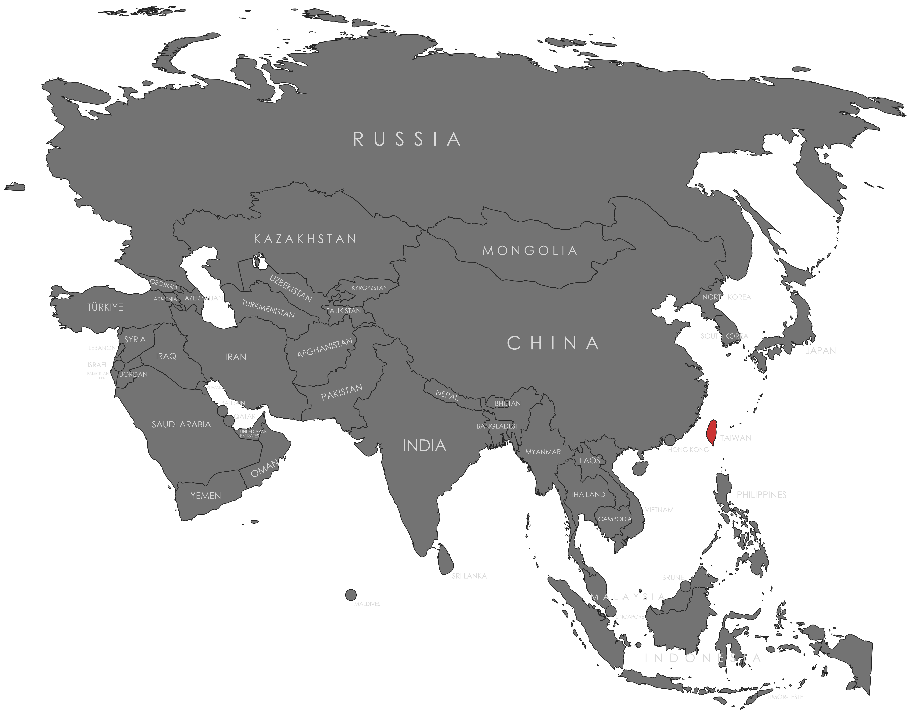

Specifications
- Local Name: 中華民國 (Zhōnghuá Mínguó)
- Proportion: 2:3
- Name of the Flag: Blue Sky, White Sun, and a Wholly Red Earth (青天白日滿地紅; Qīngtiān Bái Rì Mǎndì Hóng)
- Adopted: October 28, 1928
Symbolism
- Red: Land and people, fraternity, and nationalism
- Blue: Liberty and justice
- White: Equality and democracy
- White sun with twelve rays: The twelve months and twelve traditional Chinese hours
- Red field: The blood shed by patriots for freedom
Colors:
Shapes / Symbols:
Meaning / Special Display
- Displayed on national holidays and government buildings as a symbol of national unity and sovereignty.
Description
- The flag represents Taiwan’s sovereignty, democratic governance, and resilience in preserving its identity.
- For its citizens, it symbolizes pride, national unity, and the spirit of independence.

Return to Gallery